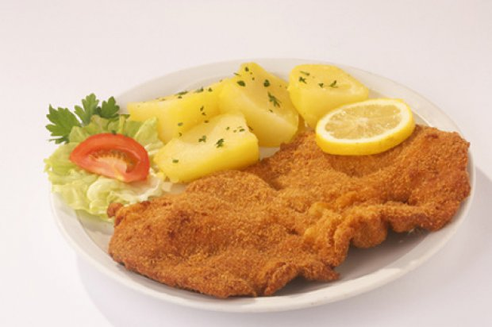

WIENER SCHNITZEL

Das klassische Wiener Schnitzel - Rezept wird am liebsten
sonntags mit Petersilkartoffeln oder Reis serviert.
Zubereitung
- Schnitzel zwischen Frischhaltefolie behutsam klopfen.
Fleisch beidseitig salzen, in Mehl wenden, abklopfen,
durch die Eier ziehen und in den Bröseln wenden.
-
Schnitzel ca. 2 Finger hoch Backfett goldgelb backen.
Während des Backens die Pfanne ein wenig rütteln,
damit die gleichmäßig goldbraun werden.
Schnitzel herausheben, auf Küchenpapier abtropfen lassen.
- Zitrone in Spalten schneiden und die fertigen
Wiener Schnitzel mit Zitronenspalten garnieren.
Zutaten
| 4 Stk |
Kalbsschnitzel (à 160 g) |
150 g |
griffiges Mehl |
| 2 Stk |
Eier |
| 300 g |
Semmelbrösel |
| 1 Stk |
Zitrone |
| 1 Prise |
Salz |
2 EL |
Backfett, Öl od. Butterschmalz |